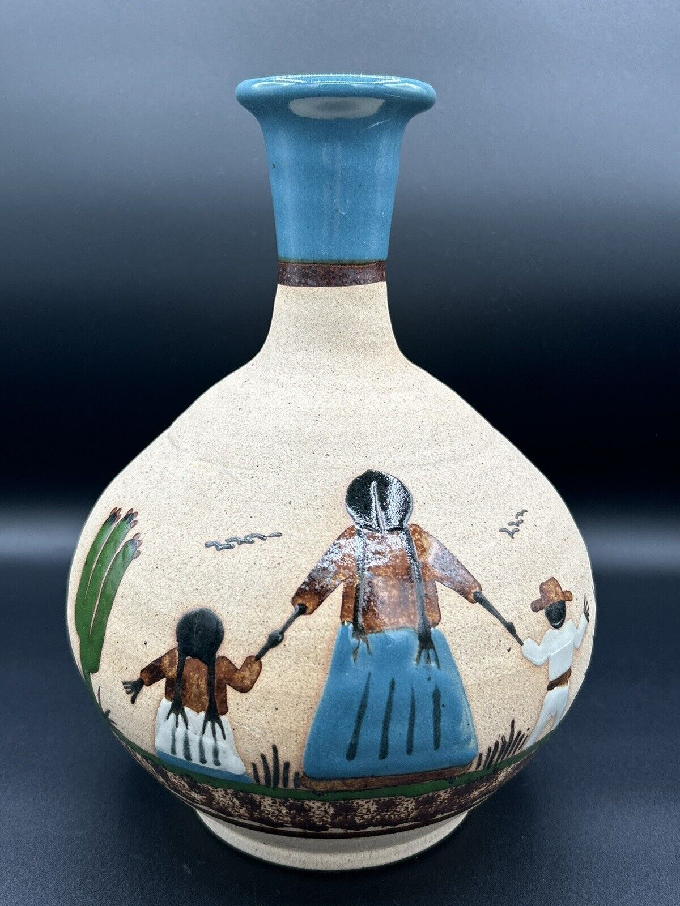
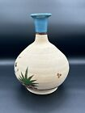
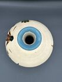

Tenola Folk Art Vase
R299.99
In Stock (18 items)
The Tenola Folk Art Vase is a vibrant celebration of culture and craftsmanship. Inspired by traditional folk art motifs, this hand-painted vase bursts with color and energy, telling a story of heritage and creativity.
| Weight | 1.5 kg |
| Dimensions | 10 x 10 x 20 cm |
| Material | High-quality clay |
| Indoor/Outdoor | Suitable for both indoor and outdoor use |
| Handcrafted | Each pot is handmade, resulting in unique variations |